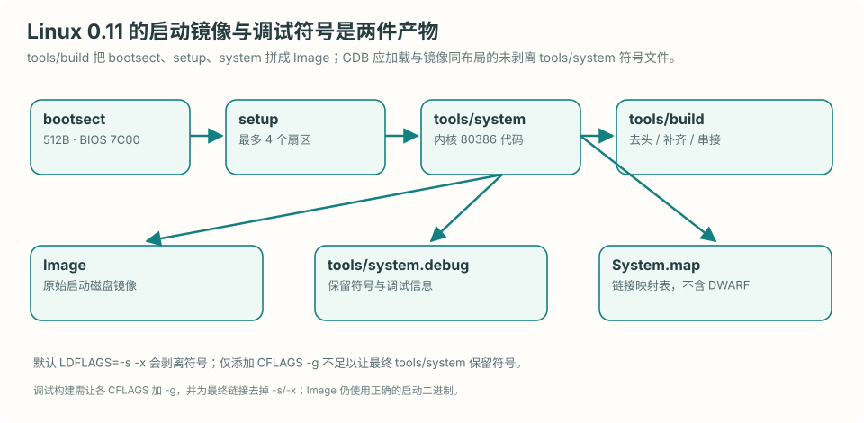
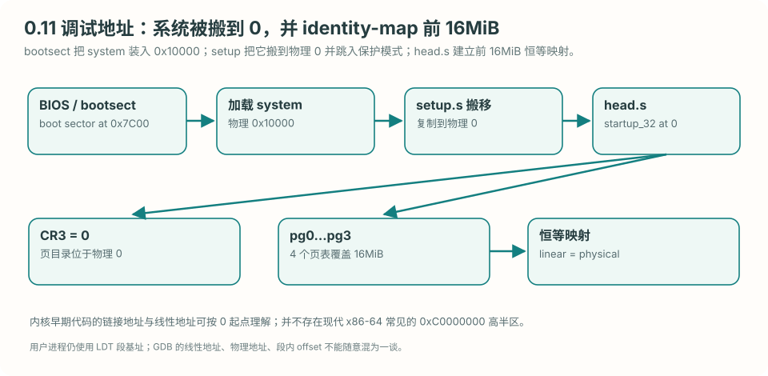

QEMU + GDB：从 bootsect 到内核符号的单步跟踪
为 Linux 0.11 建立可复核的 QEMU GDB 调试链：保留未剥离符号、正确启动原始 Image、理解 0x10000 到 0 的搬移和前 16MiB 恒等映射。
QEMU GDB Stub · 0x10000 → 0先理解 0.11 的 Image，再启动 QEMU
现代 Linux 常用 bzImage、boot protocol 和 qemu -kernel 启动；Linux 0.11 则沿用 8086 boot sector + setup + 80386 system 的早期启动链。根目录 Makefile 的 Image 目标调用 tools/build boot/bootsect boot/setup tools/system，把三个二进制拼成原始启动镜像。
tools/build.c 明确说明它会检查 bootsect/setup/system 的文件头、去除各自头部、填充 setup 到 4 个扇区，再拼接内核代码。因此 Image 不是 ELF、不是 Multiboot 文件，也不是现代 Linux boot protocol 的 bzImage。将它直接传给 qemu -kernel Image 会套用错误的启动协议；更直接的方式是把它作为软盘镜像启动。

为什么默认 tools/system 没有 GDB 源码符号
根目录 Makefile 默认写着 LDFLAGS=-s -x -M：-s 会剥离符号表，-x 会删除局部符号，-M 生成链接 map 并重定向到 System.map。因此即使给 C 文件增加 -g，最终链接产物仍可能被 -s 去掉调试符号。System.map 是地址到符号名的链接映射，不等于包含行号和局部变量信息的调试文件。
正确做法是让所有编译内核 C 文件的 CFLAGS 保留 -g，并额外链接一份不带 -s -x 的 tools/system.debug；启动镜像继续使用正常的 stripped tools/system。两次链接必须使用相同对象文件、链接顺序和基址，确保符号地址与 Image 内的代码布局一致。不要把带符号的 system.debug 直接交给 tools/build：build 会将 GCC 头之后的字节原样写入启动镜像，调试符号不应该被打包进运行镜像。
# 编译阶段：内核各子目录 CFLAGS 保留 -g
# 链接一份调试文件：保留符号，不加 -s / -x
gld -M boot/head.o init/main.o kernel/kernel.o \
mm/mm.o fs/fs.o kernel/blk_drv/blk_drv.a \
kernel/chr_drv/chr_drv.a kernel/math/math.a lib/lib.a \
-o tools/system.debug > System.debug.map
# 正常启动镜像仍由 stripped tools/system 构建
make Image0.11 原始 Makefile 使用历史 GCC/GAS/ld 和已经废弃的编译选项；现代 GCC 可能拒绝 -fcombine-regs、-mstring-insns 等参数。应使用与该源码匹配的旧工具链或经过验证的兼容构建环境，不要将“给现代 gcc 加 -g”误称为可直接编译成功。
把 Image 放进软盘，并匹配根设备
若要用 QEMU 的软盘启动，先将 Image 写入标准 1.44MiB 原始软盘容器。0.11 根目录 Makefile 的默认 ROOT_DEV=/dev/hd6，tools/build 的默认 major/minor 是 (3,6)，即第一块 IDE 硬盘的第 6 分区 hda6。QEMU 挂载的 root disk 必须确实有这个分区布局；如果你的 rootfs 是其他分区或软盘根，需在生成 Image 时设置匹配的 ROOT_DEV。
truncate -s 1474560 boot-1.44.img
dd if=Image of=boot-1.44.img conv=notrunc
# root-disk.img 必须包含 build 时选定的根分区
qemu-system-i386 -m 16 -boot a \
-drive file=boot-1.44.img,format=raw,if=floppy \
-drive file=root-disk.img,format=raw,if=ide \
-s -SQEMU 的 -s 是在 TCP 1234 打开 GDB Stub 的简写；-S 是让 CPU 在启动时暂停，等待 GDB 发出 continue。若省略 -S，虚拟机可能在 GDB 连接前已经越过你要观察的启动阶段。QEMU 官方 GDB 使用说明 和 QEMU 启动参数说明。
连接 GDB：符号文件与远程目标分开
在另一个终端使用未剥离的内核符号文件启动 GDB，然后连接 QEMU 的 gdbstub。QEMU 负责执行 guest；GDB 读取本地 tools/system.debug 的符号/行号信息，并通过远程协议读写 guest 寄存器与内存。
gdb tools/system.debug
(gdb) set architecture i386
(gdb) target remote localhost:1234
(gdb) info files
(gdb) info registers
(gdb) info address _main
(gdb) hbreak _main
(gdb) continue
(gdb) x/12i $eip旧 GCC 工具链可能把 C 全局符号输出为带前导下划线的链接名（例如汇编引用 _main），因此先用 info functions、info address 或 nm tools/system.debug 核对实际符号名，不要想当然地使用现代内核的 start_kernel。0.11 的 C 启动入口是 main，由 head.s 在 setup_paging 前后调用。
在 QEMU TCG 模拟器中可使用硬件辅助断点；如果在内核代码尚未搬移到目标位置之前就设置断点，优先使用 hbreak，或在 setup 完成搬移后再设置软件断点。不同加速器的断点能力不同，QEMU 官方文档也提醒断点/观察点支持取决于 accelerator。
最关键的地址事实：system 最初在 0x10000，随后搬到 0
bootsect 先把 system 装载到物理地址 0x10000。setup 代码随后把 system 搬移到物理地址 0，并跳转到保护模式入口。boot/head.s 的注释明确写明 startup 发生在绝对地址 0x00000000，页目录也放在这里。接着 setup_paging 用 4 个页表覆盖前 16MiB，并将 CR3=0，建立前 16MiB 恒等映射。

因此在 0.11 的早期内核代码中，符号链接地址可从 0 起点理解，内核线性地址也与物理地址恒等；不能套用现代 x86-64 常见的 0xC0000000 高半区内核映射。另一方面，用户进程代码/数据通过 LDT 的 base 和 limit 管理，GDB 中的线性地址、物理地址、段内 offset 仍不能随意混为一谈。
_pg_dir:
startup_32:
...
call setup_idt
call setup_gdt
...
jmp after_page_tables
...
setup_paging:
movl $1024*5,%ecx /* page directory + 4 tables */
...
movl $pg0+7,_pg_dir
movl $pg1+7,_pg_dir+4
movl $pg2+7,_pg_dir+8
movl $pg3+7,_pg_dir+12
xorl %eax,%eax
movl %eax,%cr3
movl %cr0,%eax
orl $0x80000000,%eax
movl %eax,%cr0实模式断点还需考虑 CS:IP：线性地址由 CS×16+IP 计算。QEMU GDB 文档建议在 16-bit BIOS 阶段使用 set architecture i8086，并用 x/10i $cs*16+$eip 检查当前位置；进入 32-bit protected mode 后再切回 i386 架构视图。
从 int 0x80 跟踪一次系统调用
当内核已经完成启动，可在 system_call 汇编入口或目标系统调用函数上设置断点。0.11 在 sched_init() 中把 0x80 安装为 system gate；用户态通过 int $0x80 进入 system_call.s。EAX 是系统调用号，前三个参数由 EBX、ECX、EDX 传入。跟踪时先检查寄存器，再单步经过保存现场、切换 DS/ES/FS 和函数表调用。
(gdb) hbreak _system_call
(gdb) continue
(gdb) info registers
(gdb) x/12i $eip
(gdb) stepi
(gdb) p/x $eax
(gdb) p/x $ebx
(gdb) x/8wx $esp
(gdb) info registers若需要观察函数调用前的用户栈，先确认当前 CPL、CS、SS 与 FS 选择子；进入内核后 FS 被设置为当前任务的本地数据段，DS/ES 则改成内核数据段。系统调用返回还要经过 ret_from_sys_call 的信号检查和现场恢复，不是 C 函数 return 后立即回到用户代码的简单跳转。
可复现的调试验收清单
# 确认默认链接是否剥离符号
grep -n 'LDFLAGS\|tools/system\|Image:' Makefile kernel/Makefile
# 检查内核符号（未剥离构建）
nm -n tools/system.debug | grep -E '_main|startup_32|_system_call'
# 核对启动镜像和调试符号是不同文件
file Image tools/system tools/system.debug
# 通过 GDB 远程连接后
(gdb) info address _main
(gdb) hbreak _main
(gdb) continue
(gdb) info registers- QEMU 启动前停在 reset vector，GDB 能连接到
:1234。 - 符号文件能解析实际
_main和_system_call地址；若只能显示裸地址，先排查-s/-x和符号文件是否匹配。 - bootsect/setup 正常加载；在搬移后观察
startup_32与_main。 - 能检查 CR0/CR3、EIP、CS、ESP，并解释当前处于实模式还是保护模式。
这些是执行时验收标准，不是本次仓库 CI 已经跑过 QEMU 的证明。没有匹配的旧工具链、Image 和根盘时，不应把静态文档检查写成“内核已成功启动”。
源码与官方调试文档
- Makefile：LDFLAGS、tools/system 和 Image 目标。
- tools/build.c：bootsect/setup/system 拼接、头部校验、ROOT_DEV。
- boot/bootsect.s / boot/setup.s：装载与搬移启动阶段。
- boot/head.s：startup_32、页目录、前 16MiB 恒等映射。
- kernel/system_call.s：system_call 汇编入口和寄存器约定。
- QEMU GDB Stub 官方文档：-s/-S、远程连接、寄存器和断点限制。
下一章将把调试器里看到的 EAX/EBX 变成一个可运行的接口：新增系统调用 sys_hello，并逐一修改用户 ABI、内核函数表和汇编边界。